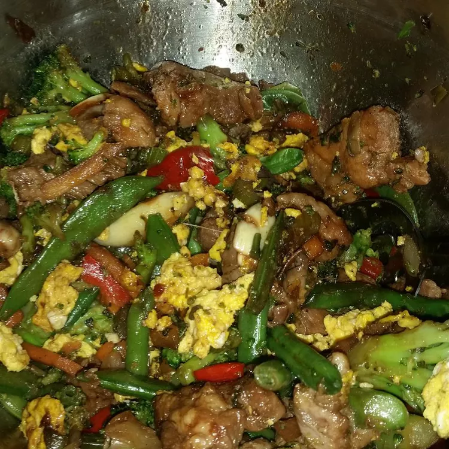

Hong Shao (Chinese Braised Pork)

Description:
I have been reading about this traditional Chinese dish on the Internet
and found there are many different versions of it. Some are spicy,
incorporating chile and ginger. Others have the spices of
star anise, cinnamon, and lots of garlic added too.
The recipe my grandma passed on to us here is the garlicky one.
Garnish with some chopped spring onions or cilantro and serve
with steamed white rice or buns. I like to serve a side dish
of pickled cucumber slices with the pork and this tanginess
brings another dimension to the dish. Chi Fan (time to eat)!
Ingredients:
- 1 pound pork belly, sliced
- 2 tablespoons vegetable oil
- 1 (3 inch) cinnamon stick
- 3 whole star anise
- ¼ cup light soy sauce
- ¼ cup Shaoxing rice wine
- 3 tablespoons dark soy sauce
- 3 tablespoons white sugar, or to taste
- 1 teaspoon ground coriander
- 10 cloves garlic, peeled
- ¼ cup water, or as needed
Steps:
-
Bring a pot of water to a boil; add pork belly.
Cook until pork belly softens, about 5 minutes.
Drain and cool pork until easily handled, 5 to 10 minutes.
Cut into 2-inch chunks.
- Heat vegetable oil in a large pot over medium-low heat.
Add cinnamon stick and star anise; fry until fragrant, about 30 seconds.
Stir in pork belly, light soy sauce, Shaoxing wine, dark soy sauce, sugar,
and garlic. Reduce heat to very low and simmer, stirring occasionally and
adding water if sauce reduces too quickly, until pork is tender, about 50 minutes.
- Increase heat slightly and continue simmering until sauce reduces
to a sticky consistency, about 10 minutes. Remove cinnamon stick and star anise; discard.
Content taken from
https://www.allrecipes.com/recipe/19344/homemade-lasagna/